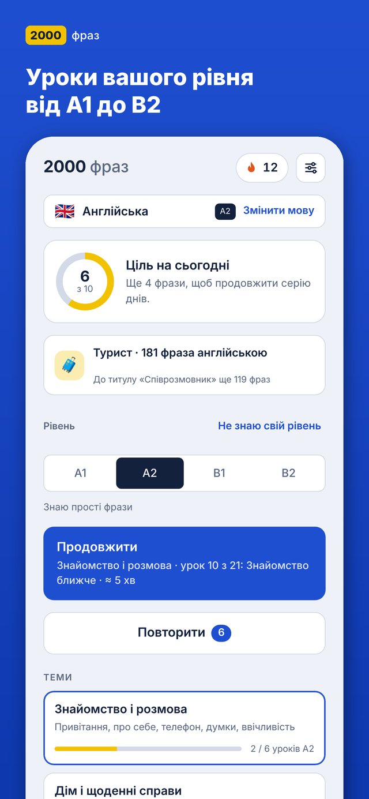
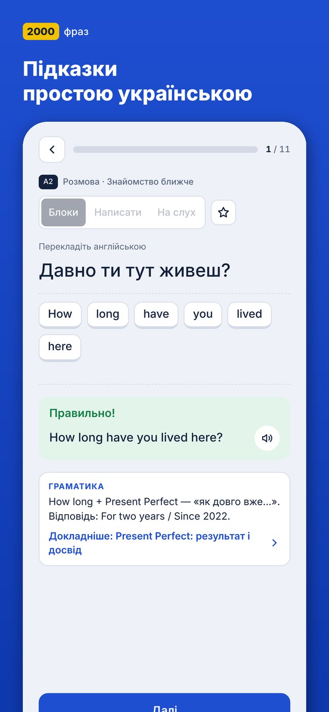
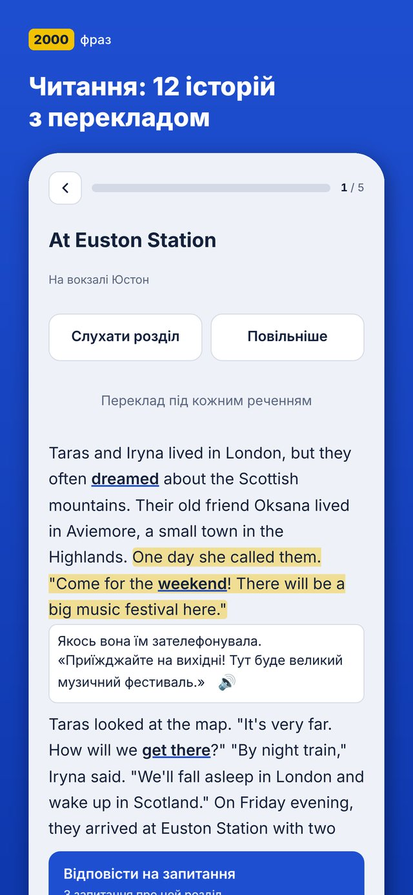

Aplikacja na iPhone’a od Orizo Labs
2000 fraz
Zacznij mówić w nowym kraju już w pierwszym tygodniu. Gotowe zwroty do lekarza, pracy, urzędu i codziennego życia — z nagraniami audio i jasnymi podpowiedziami po ukraińsku.
Co w środku
Aplikacja dla Ukraińców, którzy się przeprowadzili lub szykują do przeprowadzki: interfejs i wyjaśnienia są po ukraińsku.

Lekcje według tematów i poziomów
Poznawanie ludzi, lekarz, praca, mieszkanie, transport, dokumenty. Poziomy A1–B2; dwuminutowy test podpowie, od czego zacząć.

Podpowiedzi po ukraińsku
Układasz zwrot z bloków, piszesz go albo uczysz się ze słuchu. Do każdego błędu — krótkie wyjaśnienie reguły.

Czytanki i powtórki
12 historii w każdym języku z tłumaczeniem i nagraniem. Powtórka pojawia się właśnie wtedy, gdy zwrot zaczyna ulatywać z pamięci.
Za darmo i Plus
Za darmo
- Pierwsze lekcje każdego tematu i poziomu
- Powtórki i podstawy gramatyki
- Pierwsza historia każdego poziomu
- Cały „Angielski wojskowy”
Plus
- Wszystkie lekcje ze wszystkich tematów i poziomów
- Pełny przewodnik po gramatyce
- Wszystkie historie z czytanek
- Subskrypcja miesięczna lub roczna (7 dni za darmo) albo jednorazowy zakup na zawsze
Pytania
Czy trzeba się rejestrować?
Nie. Konto nie jest potrzebne, postępy zapisują się na Twoim iPhonie.
Jak przenieść postępy na inny telefon?
Ustawienia → „Kopia zapasowa” → „Zapisz”: plik możesz zachować w aplikacji Pliki lub na iCloud Drive. Na nowym telefonie wybierz „Przywróć”.
Jak anulować subskrypcję?
Ustawienia iPhone’a → Twoje imię → Subskrypcje → „2000 fraz”. Dostęp działa do końca opłaconego okresu.
Czy będzie wersja na Androida?
Tak, przygotowujemy ją. Na razie aplikacja jest dostępna na iPhone’a.
Znalazłeś błąd w zwrocie?
Napisz do nas na support@orizolabs.com lub przez „Napisz do twórcy” na dole ekranu głównego — wiadomość będzie już zawierać wersję aplikacji i język.